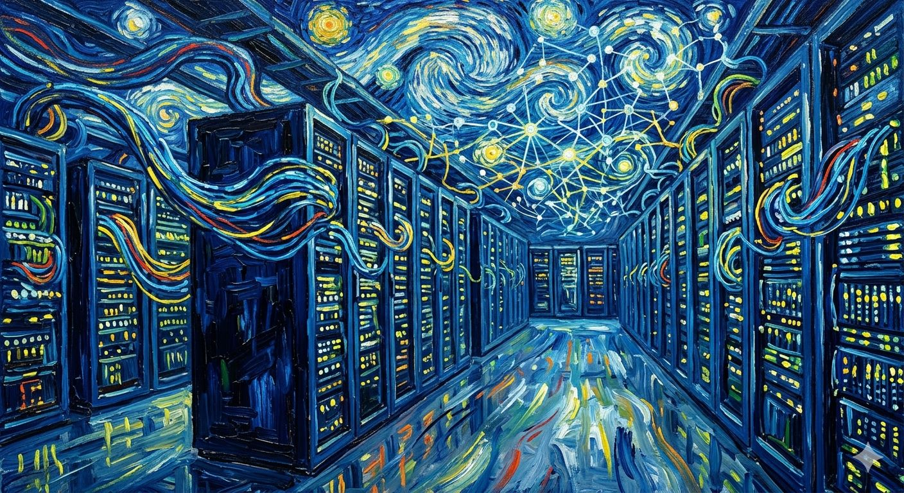
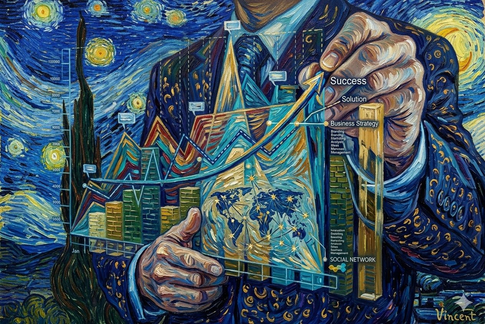

Seja Bem-Vindo(a) ao Portifólio & Blog de
Ciência de Dados | Automação Inteligente | Soluções em IA
Soluções em dados aplicadas a problemas reais — do diagnóstico à entrega de resultados mensuráveis.


Conteúdo & Conhecimento
Dicas, tendências e insights sobre Ciência de Dados, Automação Inteligente e Inteligência Artificial aplicados a negócios.
Cases
Resultados reais a partir de dados — do problema de negócio à entrega de insights estratégicos.
60%
dos agentes concentrados no Sudeste
Norte & CO
regiões com escassez crítica de distribuidoras
Insights
estratégicos para órgãos de fomento e investidores
Problema de negócio
A indústria cinematográfica brasileira carecia de uma visão clara da distribuição regional de seus agentes econômicos, dificultando a identificação de oportunidades de investimento em regiões menos atendidas.
Solução de dados
Coleta e tratamento de dados públicos da ANCINE com Python (Pandas, GeoPandas), criando mapas de calor e análises exploratórias da concentração de produtoras, distribuidoras e exibidoras em todo o território nacional.
Resultado & impacto
Estudo revelou concentração de 60% dos agentes no Sudeste e escassez crítica no Norte e Centro-Oeste, gerando insights acionáveis para órgãos de fomento e investidores direcionarem recursos para mercados emergentes.
Análise exploratória dos dados abertos da Polícia Rodoviária Federal, identificando padrões temporais, trechos críticos e perfil dos acidentes em rodovias federais brasileiras em 2024.
Ver no GitHub